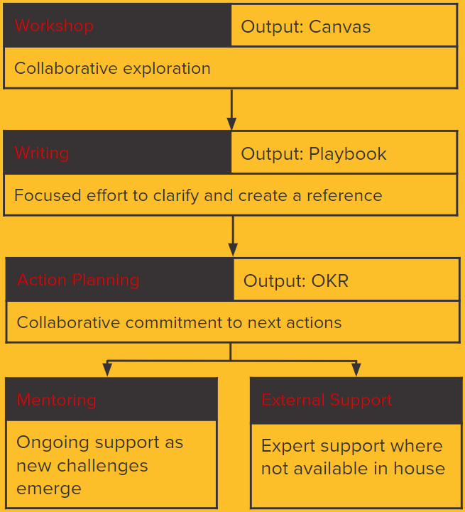

If your software roadmap is driven by a few big clients
We’ll work together to map your path to a scalable and profitable product market fit and create a Product Discovery Playbook. Our mentors can then guide you through the next steps that embed product thinking in your company. Existing clients will love the accelerated innovation.
If high client setup costs limit your market
Together we’ll create you a strategy to transform your software into a truly configurable product that can be released to new customers with 0 lines of code and present it in a Product Delivery Playbook. Our technical mentors can then help your engineers become confident in always thinking product first and overcoming the challenges this presents.
If you’re too busy servicing your clients to develop your business
Using proven SaaS B2B Sales and Marketing techniques, we’ll work together to develop a strategy that builds your reputation as an innovator and makes it easy for customers to choose you over the competition. We’ll present this in a Product Demand Playbook and help you setup a sales and marketing process driven by data.
Our Approach

Initial Exploration
From our initial call or meeting, well assess where you currently are on the road to product growth. We’ll produce an assessment and growth plan that will outline areas where you could accelerate your transformation. We might conclude that you’re doing great without us, or we might recommend help in any of our 3 focus areas - Discovery, Delivery or Demand. Our initial exploration is free.
Playbooks
Our next step is to start researching - you, your clients, the problems you solve in unique ways and the wider demand for those solutions. We’ll collaborate in a number of workshops and validate assumptions in the market. You’ll have a validated playbook that tells you where you are, where you can go and how to get there. Playbooks focus on either Discovery, Delivery or Demand and cost between £5K-£8K each.
Mentoring and External Support
If you’d like some help taking the next steps towards a high growth product, our mentors can help you through the journey, they can coach guide or just be there to help if you run into sticky problems. Our range of experience means we can help with anything from team creation and building (onsite or remote) to securing new investment. We’re happy to help as much or as little as you like.